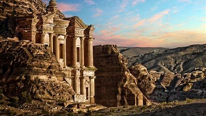
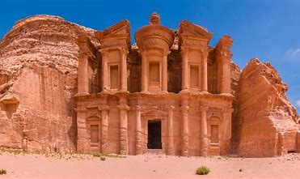

MARAVILLA #2
2. Petra (Jordania)
Historia de la Maravilla
Ver video en YouTube
 Petra fue la capital del reino nabateo, establecido en el siglo IV a.C. Los nabateos, un pueblo árabe, construyeron Petra en un lugar estratégico para controlar las rutas comerciales que conectaban Arabia, Egipto y el Mediterráneo. La ciudad floreció durante el siglo I d.C., convirtiéndose en un importante centro de comercio y cultura. Su decline comenzó con la invasión romana y la pérdida de su importancia comercial, y la ciudad fue eventualmente olvidada en gran parte hasta su redescubrimiento en 1812 por el explorador suizo Johann Ludwig Burckhardt.
Petra fue la capital del reino nabateo, establecido en el siglo IV a.C. Los nabateos, un pueblo árabe, construyeron Petra en un lugar estratégico para controlar las rutas comerciales que conectaban Arabia, Egipto y el Mediterráneo. La ciudad floreció durante el siglo I d.C., convirtiéndose en un importante centro de comercio y cultura. Su decline comenzó con la invasión romana y la pérdida de su importancia comercial, y la ciudad fue eventualmente olvidada en gran parte hasta su redescubrimiento en 1812 por el explorador suizo Johann Ludwig Burckhardt.

Costumbres y Tradiciones

Durante su apogeo, Petra era un centro de comercio y cultura donde coexistían diversas influencias culturales. Los nabateos tenían costumbres relacionadas con el comercio de especias y el manejo del agua, desarrollando un avanzado sistema de canales y cisternas. Las tradiciones religiosas incluían cultos a dioses nabateos y una fuerte influencia de las religiones de los pueblos vecinos.
Maravilla del Mundo
Petra fue declarada una de las Nuevas Siete Maravillas del Mundo en 2007, en una votación internacional organizada por la Fundación New7Wonders. Esta selección se realizó en una campaña que incluyó votaciones de personas de todo el mundo para elegir las maravillas arquitectónicas más impresionantes y significativas.